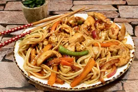

This delicious yaki udon stir-fry is similar to yakisoba, but it's made with thick, white udon noodles and tossed with a much simpler sauce.
Try to find frozen or fresh udon noodles. Dried udon noodles will work, but you'll lose some of the signature texture.
Bring a large pot of lightly salted water to a boil. Cook udon in boiling water.
Stir occasionally, until noodles are tender yet firm to the bite.
After 10 to 12 minutes. Drain noodles and rinse with cold water.
While boiling the udon, warm olive oil in large saucepan or wok over medium heat.
Add chicken and sauté until cooked through, 3 to 4 minutes.
Add onion, bell pepper, cabbage, carrots, and garlic. Cook for 3 to 4 minutes, allowing vegetables to maintain most of their crispness.
Pour soy sauce over vegetables and chicken; sauté 1 to 2 minutes more.
Add udon noodles and toss well.
Mix in gojuchang and ketchup, thoroughly combining to mix all the flavors.
Season with salt and pepper.